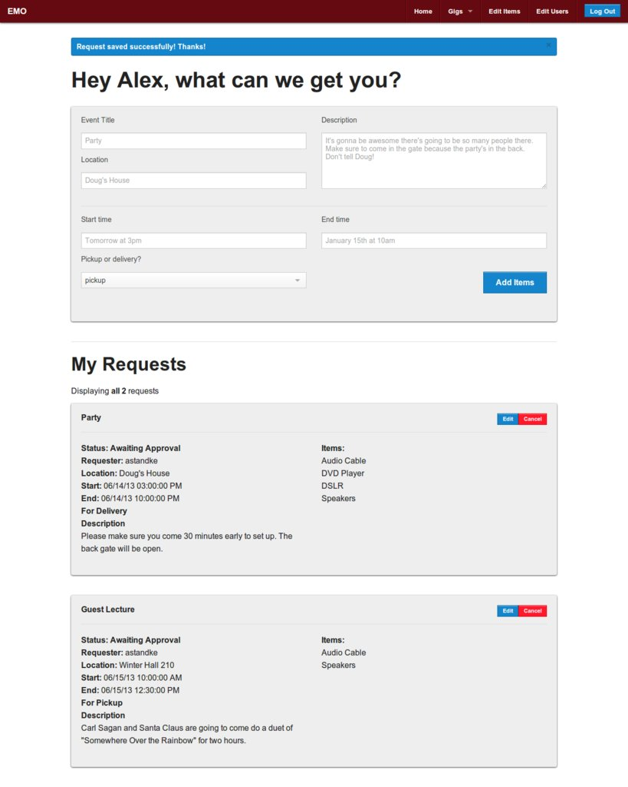

I am a student, Ruby on Rails developer, web designer, photographer, cyclist, and adventurer. I like building things almost as much as I like taking them apart. I love designing products to make things easier while getting out of the way. I have an obsession with simplicity and clarity, and strive for perfection and efficiency in all things. I design software and study computer science at Westmont College.
Projects
Caketop Theater (Senior Project)
As it becomes more and more common to host home media servers, the problem of how to get that media out to client computers becomes a more interesting one. Caketop Theater attempts to address this problem in a novel way, by providing a web based interface for browsing, and an HTML5 player for movies, tv shows, and music. Given a directory in which movies, music, or tv shows reside, it will download metadata (cover art, album art, release date, genre, cast, etc) and provide users with the ability to browse, filter, and search based on that metadata. Caketop Theater is an open source web app built on Ruby on Rails, served through Apache/Passenger. The code is available for perusal here.
Westmont Connect
Westmont inspires an incredible level of connectedness in it's students and alumni, so when it came time to redesign the Alumni Directory, we decided to reinvent it with these connections central to the system. Westmont Connect is a platform though which the tens of thousands of Westmont Alums can connect with their friends, classmates, and mentors. Connect is a full featured social network, with status updates, networking, and messaging that also provides Alumni with a way to keep their personal and professional data up to date. Built association with Inkstone Software on Rails with MongoDB.
Upkeep
Technology that make peoples lives better and more productive is my passion, and Upkeep does just that. For close to a decade, the Physical Plant at Westmont had been using the same system to manage work orders and requests. It came with a tomb for a manual and only worked properly in IE, it was time for a change. First and foremost Upkeep had to be intuitive enough for anyone to use. Features include ticket creation, scheduling, managmenet and assignment, employee management, and CAS integration for single sign on. Ruby on Rails and MongoDB provide the back end to this blazing fast and beautiful new system, while Bootstrap provides styling and responsiveness for key mobile pages.
Academic Technology Online

Academic Technology sounds fancy, but really they're just the roadies of Westmont. They bring the sound, light, and video equipment to every event on campus, and make sure everything goes off without a hitch. They are fast, flexible, and highly mobile, so their work management system has to be too. EMO shares a lot of features with Upkeep, but has a highly streamlined workflow and works seamlessly on mobile or desktop. Academic Technology employs only student workers, and works on a bounty system, so it's also an experiment in gamification. Student workers can see their average gigs worked per week and month, and there are weekly/monthly/all-time leaderboards where they can see how they stack up against their peers. EMO uses Rails and MongoDB on the back end, with Foundation on the front for site-wide responsive grids.
Education
Westmont College
A small Christian school might be an unusual choice for someone seeking a computer science degree, but I wouldn't have it any other way. Westmont follows the Christian Liberal Arts tradition, in which students are given a varied and thorough education on a wide variety of subjects outside of their main discipline, in contrast to practical arts schools, where students are provided with the bare minimum of general education. This style of education focuses on more than just professional preparation, making intellectual and spiritual growth as much a priority as becoming a valuable and knowledgable future employee. I believe that the additional knowledge I have gained from being a part of this tradition has helped to make me a more informed and thoughtful person, and I find the skills I've developed invaluable. For more information on the Christian Liberal Arts Tradition, please see this essay on the subject.
"The programmer, like the poet, works only slightly removed from pure thought-stuff. He builds his castles in the air, from air, creating by exertion of the imagination. Few media of creation are so flexible, so easy to polish and rework, so readily capable of realizing grand conceptual structures. Yet the program construct, unlike the poet's words, is real in the sense that it moves and works, producing visible outputs separately from the construct itself. It prints results, draws pictures, produces sounds, moves arms. The magic of myth and legend has come true in our time. One types the correct incantation on a keyboard, and a display screen comes to life, showing things that never were nor could be."